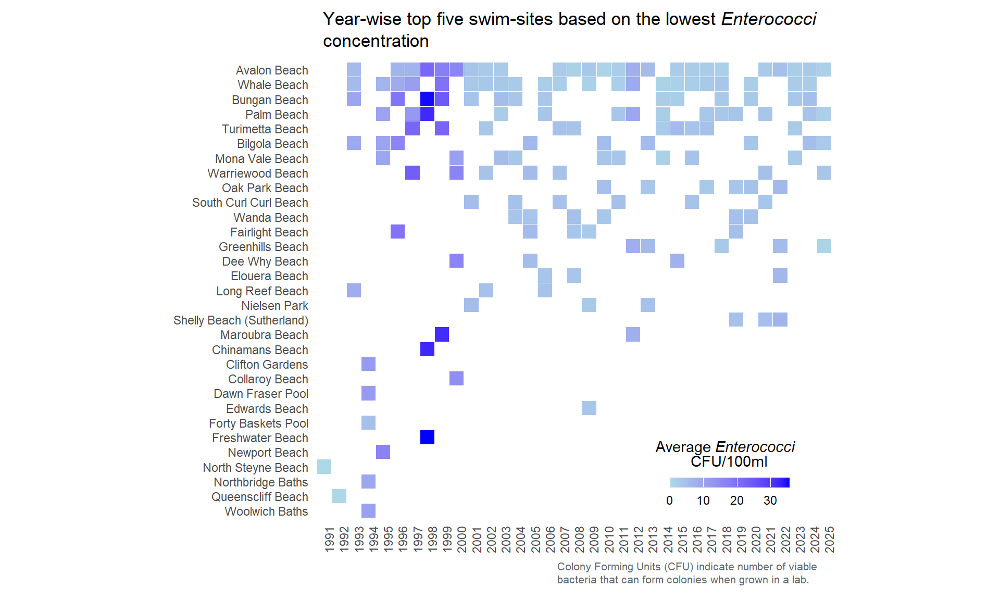

library(tidyverse)
library(ggtext)TidyTuesday data for 2025-05-20
water_quality <- readr::read_csv('https://raw.githubusercontent.com/rfordatascience/tidytuesday/main/data/2025/2025-05-20/water_quality.csv')
water_quality# A tibble: 123,530 × 10
region council swim_site date time enterococci_cfu_100ml
<chr> <chr> <chr> <date> <tim> <dbl>
1 Western Sydney Hawkesbury C… Windsor … 2025-04-28 11:00 620
2 Sydney Harbour North Sydney… Hayes St… 2025-04-28 11:40 64
3 Sydney Harbour Willoughby C… Northbri… 2025-04-28 10:54 160
4 Sydney Harbour Northern Bea… Fairligh… 2025-04-28 09:28 54
5 Western Sydney Hawkesbury C… Yarramun… 2025-04-28 10:35 720
6 Sydney Harbour Northern Bea… Little M… 2025-04-28 09:19 230
7 Sydney Harbour City of Cana… Chiswick… 2025-04-28 13:06 120
8 Sydney Harbour Inner West C… Dawn Fra… 2025-04-28 08:04 280
9 Sydney Harbour Woollahra Mu… Rose Bay… 2025-04-28 08:50 60
10 Sydney Harbour Woollahra Mu… Camp Cove 2025-04-28 09:09 100
# ℹ 123,520 more rows
# ℹ 4 more variables: water_temperature_c <dbl>, conductivity_ms_cm <dbl>,
# latitude <dbl>, longitude <dbl>glimpse(water_quality)Rows: 123,530
Columns: 10
$ region <chr> "Western Sydney", "Sydney Harbour", "Sydney Harb…
$ council <chr> "Hawkesbury City Council", "North Sydney Council…
$ swim_site <chr> "Windsor Beach", "Hayes Street Beach", "Northbri…
$ date <date> 2025-04-28, 2025-04-28, 2025-04-28, 2025-04-28,…
$ time <time> 11:00:00, 11:40:00, 10:54:00, 09:28:00, 10:35:0…
$ enterococci_cfu_100ml <dbl> 620, 64, 160, 54, 720, 230, 120, 280, 60, 100, 1…
$ water_temperature_c <dbl> 20, 21, 21, 21, 18, 21, 21, 21, 22, 22, 20, 20, …
$ conductivity_ms_cm <dbl> 248, 45250, 48930, 52700, 64, 39140, 4845, 50600…
$ latitude <dbl> -33.60448, -33.84172, -33.80604, -33.80073, -33.…
$ longitude <dbl> 150.8170, 151.2194, 151.2228, 151.2748, 150.6979…Data Wrangling
wq_grp <- water_quality %>%
filter(!is.na(enterococci_cfu_100ml)) %>%
mutate(date_y = format(date, "%Y")) %>%
group_by(date_y, swim_site) %>%
summarise(mean_enterococci = mean(enterococci_cfu_100ml, na.rm = TRUE)) %>%
slice_min(order_by = mean_enterococci, n = 5)
site_freq <- wq_grp %>%
ungroup() %>%
count(swim_site, sort = TRUE)Plotting
wq_grp%>%
mutate(swim_site = fct_rev(factor(swim_site, levels = site_freq$swim_site))) %>%
ggplot(aes(x = date_y, y=swim_site, fill=mean_enterococci)) +
scale_fill_gradient(low = "lightblue", high = "blue") +
geom_tile(color="white") +
labs(
title = "Year-wise top five swim-sites based on the lowest *Enterococci* concentration",
x = element_blank(),
y = element_blank(),
fill = "Average *Enterococci* <br> CFU/100ml",
caption = "Colony Forming Units (CFU) indicate number of viable bacteria that can form colonies when grown in a lab."
) +
theme_minimal() +
theme(
panel.grid.major = element_blank(),
panel.grid.minor = element_blank(),
axis.text.x = element_text(angle = 90, hjust = 1),
plot.title = element_textbox_simple(
padding = margin(5.5, 5.5, 5.5, 5.5),
margin = margin(5, 0, 10, 0)),
legend.title = element_markdown(hjust = 0.5),
legend.position = "inside",
legend.position.inside = c(0.80, 0.1),
legend.title.position = "top",
plot.caption = element_textbox_simple(
margin = margin(0, 0, 10, 175),
padding = margin(5.5, 0, 0, 0),
hjust = 0,
size = 8,
color = "gray40",
lineheight = 1.2
),
axis.title.x = element_text(family = "Consolas"),
) +
guides(fill = guide_colorbar(direction = "horizontal", barheight=.5)) +
coord_fixed(ratio = 1) 
#ggsave("swim_sites2.png", width = 8, height = 6, dpi = 300, bg = "white")